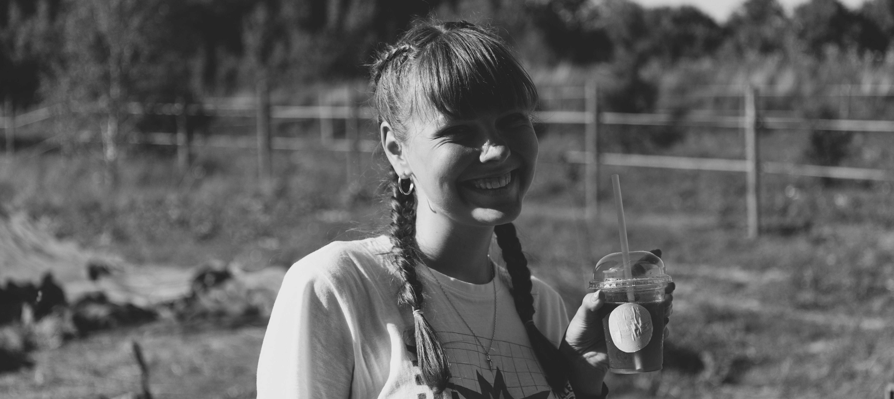

How can you support Ocean Coffee?
Want to help my dream come true and have another cool coffee shop in the city to come work at or meet up with your friends? Then please consider supporting me on my page of a Contribee platform (the Lithuanian equivalent of Go Fund Me). All of your support, even the slightest, will help me be one step closer to living out my dream. Even that 1 or 3 euros will do a lot. If every person who visits this page will donate that much, then I should reach my goal very quickly. I will be using this money to rent the space in the old town, renovate it so it would reflect the warmth and coziness I want my clients to experience. I will also need to buy a lot of coffee equipment like espresso machine, grinders, pos system, water filtration system, display case for desserts, etc. Not even talking about furniture and dishes. So every cent counts. I myself have started to save all of my coffeeshops tips since 2023 May, and some days I would only add like 50 cents, but I knew all of them will count in the end. So please consider supporting me and Ocean Coffee down below.